Developers on Amazon's app marketplace could open a support case but could not follow it. Support was hard to find, and once a case was sent the whole conversation moved to email. I redesigned how developers find support and how they follow a case, then set out the North Star that became an AI assistant. Tickets fell by about 47% after the first phase and by about 87% after the second.
| Role | Lead designer, and the only designer on the project. I joined Amazon in mid-2024. |
|---|---|
| Team | PM, technical PM, engineers, researcher, design manager, MarTech team |
| Timeline | About three weeks of design and one week of review and handoff for Phase 1, then Phase 2 after Phase 1 launched |
| Status | Both phases shipped |
| Owned | Help and support navigation, case creation, case history and the communication panels, from low-fidelity options through to handoff |
| Phase 2 | I set out the AI assistant as the North Star during Phase 1, then defined what it shows and when it escalates, working with the MarTech team |
| Constraint | Amazon's retail design system set the visual language, so my work was in structure, hierarchy and flow |
The request was to build a two-way communication system for the developer platform. Before designing anything I asked the PM how many cases the team handled each day and each month, and I mapped every route a developer could take to create a case or reach support.
The PM and the support team gave me the numbers. The Contact Us form had taken in about 13.9k cases over eight months, and only about 2% were spam, so nearly all of it was genuine demand. I used that figure as the baseline for everything that followed.
The numbers and the routes pointed to two problems, not one.
| Discoverability | Support lived on a company-wide contact page. To reach marketplace support, a developer had to pick through options for all of Amazon, then raise a ticket for their app or the console. The navigation made this hard to find, and much of the information around it was unnecessary. |
|---|---|
| No follow-up | After a ticket was submitted, the developer could not see its details. Everything ran over email. When the team missed a reply, the developer raised the same request again, which created duplicate tickets and more work for support. |
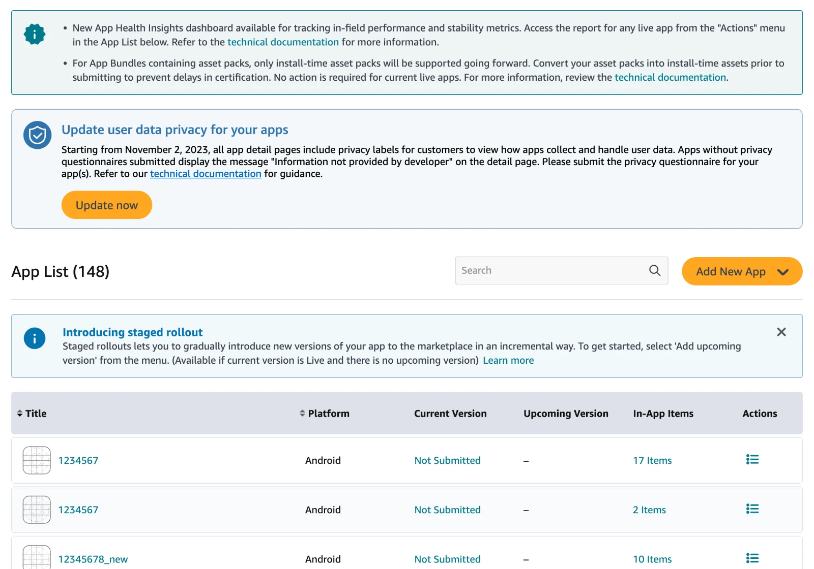
The journey for a developer was a form on the console followed by a confirmation email and a reply from a support team. After the form, everything happened in their inbox.
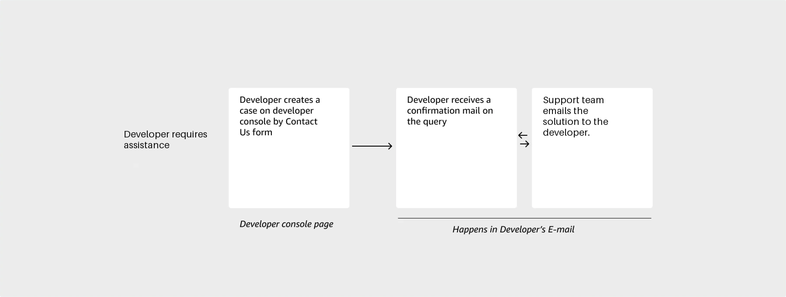
In practice the old experience was three screens.
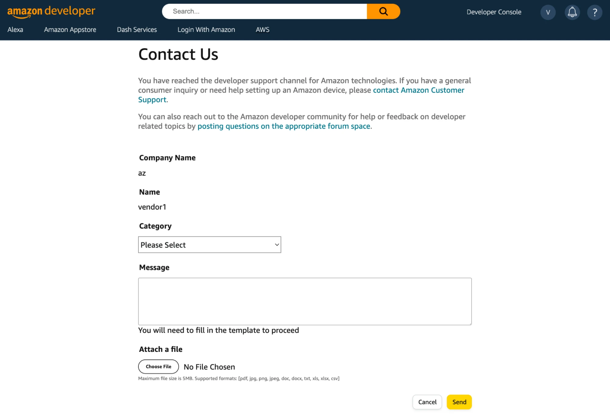
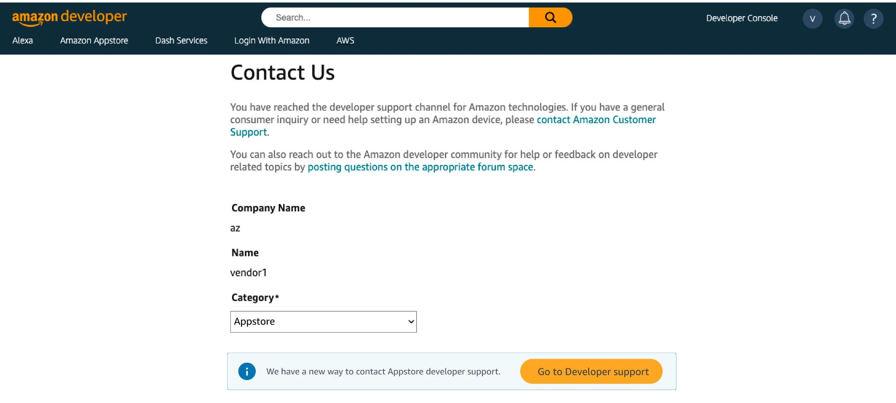
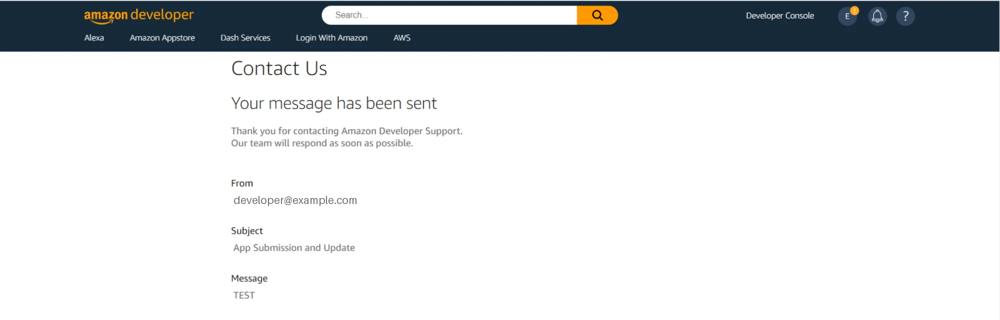
Developer support sat in a menu beside Alexa, AWS and Login with Amazon, and reaching it meant choosing the right category on a page written for the whole company. After sending, the developer saw a confirmation and nothing else.
Developers were saying the same thing in public. A forum post addressed to the team complains that no one answers the Contact Us form and that only automated replies come back.
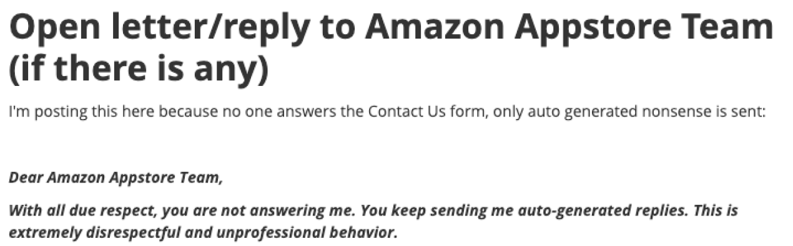
Developer sentiment research agreed. Customer support was the largest theme and mostly negative, ahead of review and approval.
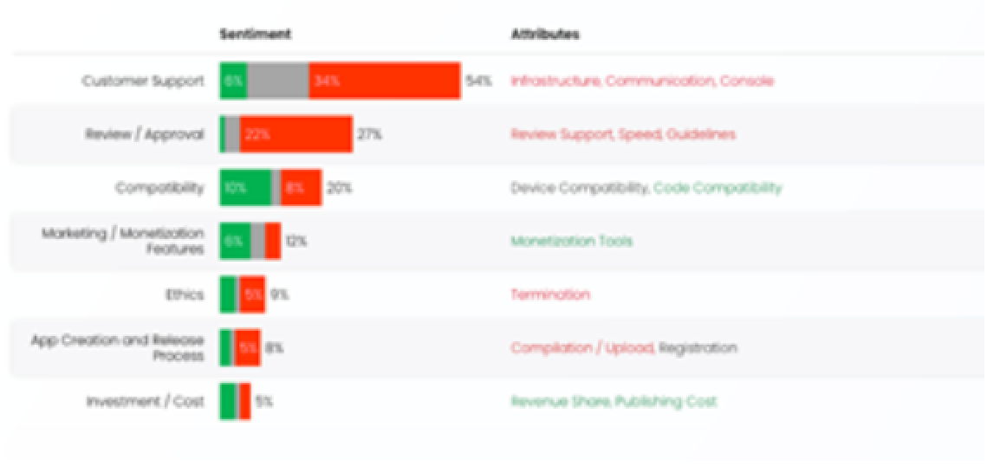
The plan came with research on who writes in, why, and what other platforms do. I used it to understand the people on both sides of the form.
Why developers write in
| While submitting an app | Questions about devices, testing and what to do next. |
|---|---|
| After submitting | Status, and how long publishing will take. The plan noted that most queries were about publishing timelines. |
| About something the marketplace sent | Why an app failed, or what a requested certificate is. |
| About money | Payments, accounts and tax. |
Where the cases went
That split is why the work had to cover two internal teams, not one.
What developers said
| Developer forum | “I have just stopped putting any apps here, and cannot recommend any developer to get into this store without support.” |
|---|---|
| Research feedback | “I have written many times in over three years, but have never received an actual response.” |
Benchmark: Google Play Console. I looked at how Google Play Console handles developer support. Its contact page asks what you need help with, suggests similar queries, and shows relevant articles before a case can be submitted. A developer can then track the case as it moves between teams.
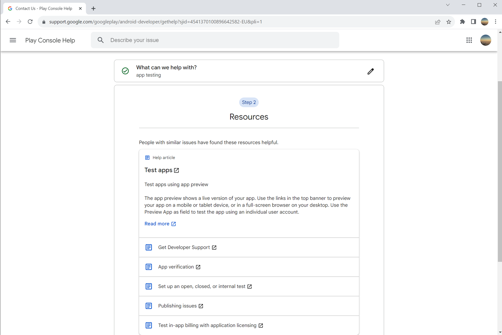
| Suggests articles before you submit | Links to documentation before a case is raised, and later an assistant that answers from the documentation. |
|---|---|
| Tracks a case across teams | A case page with a status and a history that stay in one place. |
| A contact on the same platform | A conversation held in one thread, not split between the form and email. |
Two more inputs shaped the direction. Developers had asked for an email-like thread structure in primary research, which is what the case page became. And the plan compared four case tools: two failed on a must-have, either restricting access for sensitive partners or supporting more than one team, and the existing internal tool needed the least change.
Each finding pointed to a specific design response.
| Support was hard to find | Give help its own entry in the navigation, with every action laid out. |
|---|---|
| Everything moved to email after sending | Make the case a page with its own thread and history, so nothing depends on the inbox. |
| Missed replies became duplicate tickets | Make the status visible, so a developer can see whether anyone is working on the case. |
I split the work into three steps and put them in this order on purpose.
| 1a · Find | Make support easy to find, so a developer can open a case at all. |
|---|---|
| 1b · Follow | Give every case a place where its history and replies live, so developers stop raising it again. |
| 2 · Answer | Resolve routine questions before they become tickets, and send only critical ones to the support team. |
Each step depends on the one before it. A case page is wasted if developers cannot find the way in, and an assistant needs a case system to hand off to.
Two internal teams sat behind the form, and the design had to work for both. I mapped what each team does, how it worked before, and what changes with the case system.
| DART, developer relations | Answers Contact Us cases from unmanaged developers and triages some to other teams. Before, replies went out by email and a follow-up arrived as a new case. Now the workflow stays the same, but developers can reply, so replies land on the same case. The plan proposed a first response within two business days. |
|---|---|
| ASQS, content and quality | Handles cases about functional testing and content policy, plus cases triaged by DART. Before, it asked developers for documents such as licences and certificates by email, and a follow-up had to come back through a new case, sometimes to a different person. Now it creates the case itself, sets the status to pending developer action, and the developer answers on that case. |
| Partner managers | Work with managed partners by email and message. The plan left them unchanged at first and moved them onto the same tool in a later phase. |
The ASQS flow shows the change most clearly. Before, a developer with a question about a requested document had to raise a new case, which DART triaged to ASQS and back.
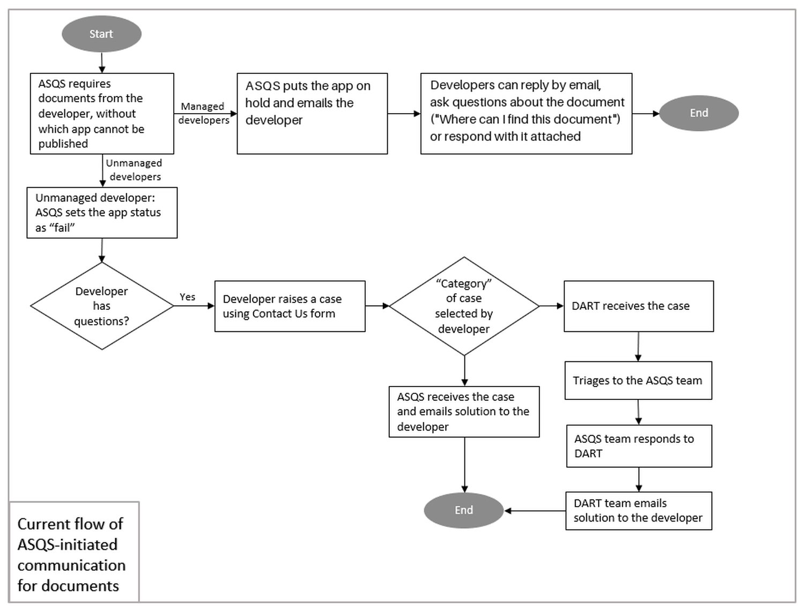
After, ASQS opens the case, and everything stays on it. The status pending developer action tells the developer that the next move is theirs.
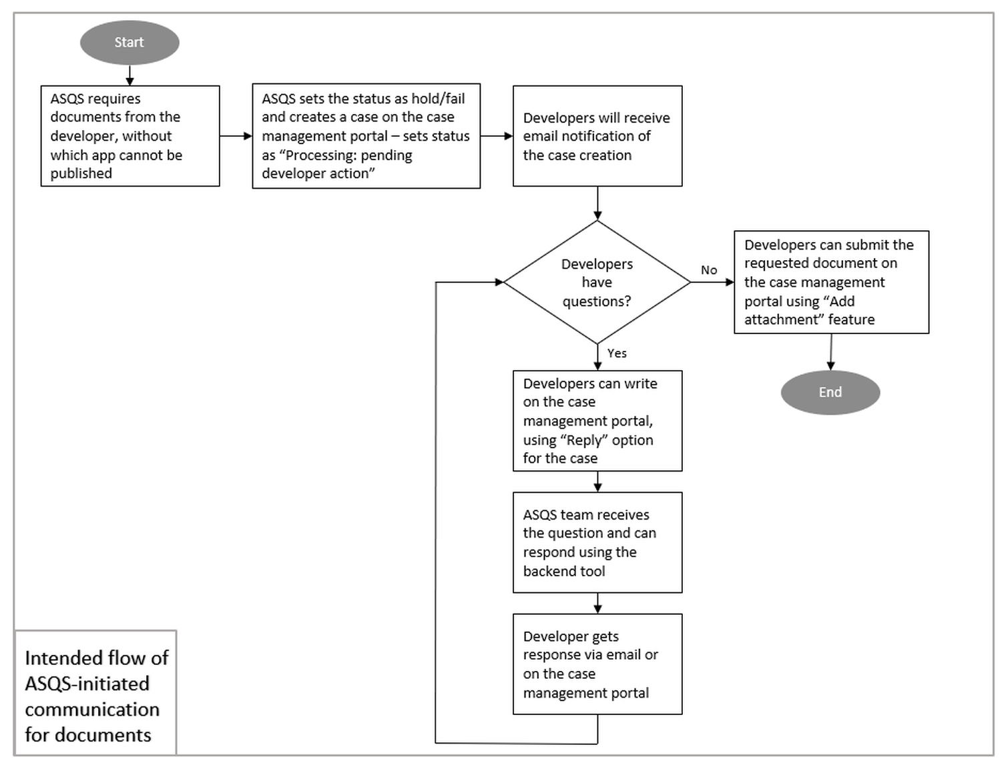
For unmanaged developers, the flow starts with prompted links on the Contact Us page, so a developer who only needs an answer never opens a case. If they still need help, DART receives the case and updates it by email and on the portal, and the developer can reply from either.
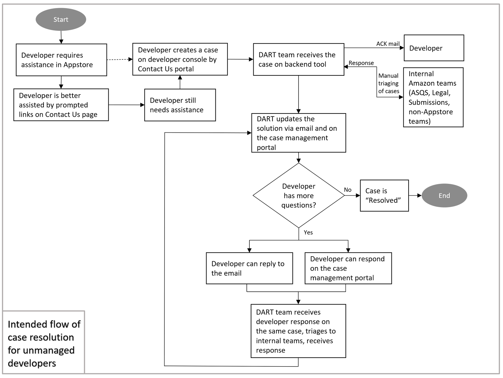
The plan was written by product management in late 2023, before I joined. I took it as the starting point and designed within it.
| Late 2023 | The plan was written: phases, a launch-and-learn rollout, user stories and a comparison of case tools. |
|---|---|
| Frame | Asked the PM for case volume, mapped every route to support, and gathered the evidence above. |
| Design, about three weeks | Low-fidelity options for finding help, then the case journey, the form, the case history and the in-app inbox. I walked the navigation options through with engineering and the PM. |
| Review and handoff, about one week | Review with the team, then handoff. |
| Phase 1 launch | Tickets fell by about 47% against the baseline. |
| Phase 2 | Once Phase 1 launched, the North Star was picked up and implemented. I worked with the MarTech team on the content structure and the escalation rules. |
The planned phases
| Phase 1, first release | Unmanaged developers get the case tool, rolled out to a random share first, starting at 20% and dialled up, with DART and ASQS using it internally. Only the highest-priority user stories. The plan called this a two-way door, easy to reverse if it failed. |
|---|---|
| Phase 2 | Managed partners and the partner managers move onto the same tool, with the learnings from Phase 1. |
| Phase 3 | Trend analysis, inline help, a generative-AI assistant, an estimated resolution time and simpler navigation. |
| What followed | Phase 1 delivered case management and the new help navigation. Phase 2 delivered the AI assistant, which the plan had placed in Phase 3. |
The first-release user stories
| Create a case | A developer submits a case with the app, a category and sub-category, and a description of up to 4,000 characters, with an attachment up to 5 MB. Over-limit or unsupported files give a clear error. |
|---|---|
| See the status | Four states: open, pending support action, pending developer action and resolved. |
| Reply and follow up | A developer can reply on the console or by email, and the reply lands on the same case. |
| DART | View, respond to and triage cases from one tool. |
| ASQS | View and reply to assigned cases, and create a case to request documents with the status pending developer action. |
Later stories covered a searchable app picker, status notifications, re-opening a resolved case, cases for managed partners, documentation links before submitting, and an estimated resolution time.
Problem. Support lived on a company-wide contact page and was hard to find.
Options. I drew low-fidelity screens exploring how a developer finds help. Two directions went forward.
Option A: support inside the avatar menu. Help sits in the menu behind the profile icon, beside Settings and Logout.
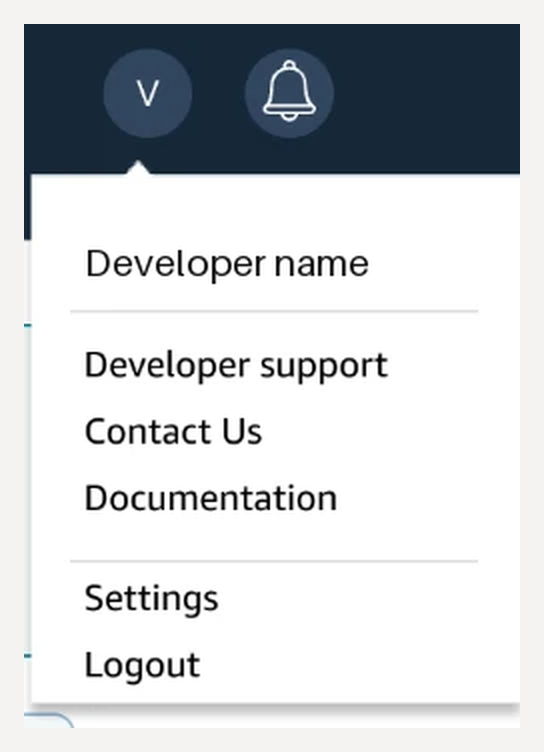
Option B: a mega menu in the top navigation. Help gets its own entry, opening a menu that shows every action a developer can take and where each one leads.
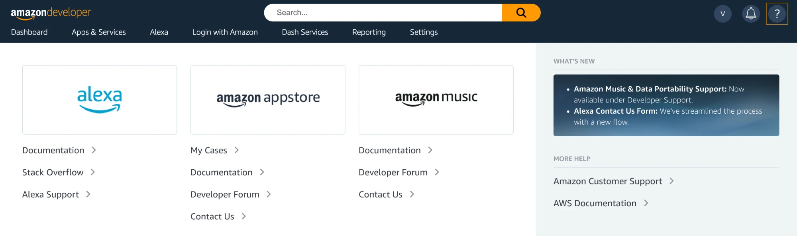
Decision: Option B. I walked both options through with engineering and the PM and explained the reasoning behind each. Most of the room preferred the mega menu. It shows what is available at a glance, and it lets a developer go straight to the community forum, raise a ticket or search the support documents from one place.
Outcome. Engineering and the PM aligned on the mega menu. Its effect on tickets is part of the Phase 1 result below, together with the rest of the case work.
Problem. After submitting, a developer got nothing back in the console, so the conversation lived in email and replies got missed.
Decision. Keep the whole journey in the console. After submitting, the developer receives a confirmation with a case ID and lands on a detailed case page, where they can follow up or re-open the case. A case management page lists every case together.
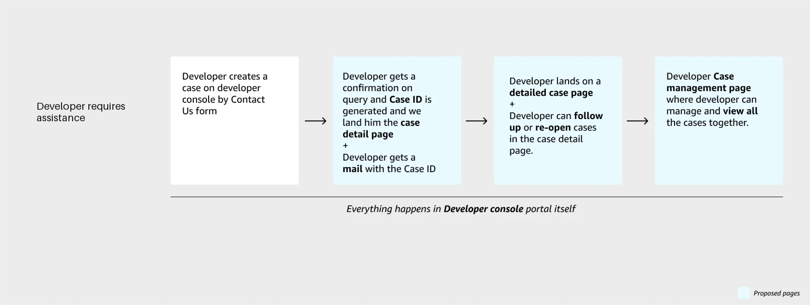
I built it in three parts.
The category became two steps, product area then topic. Related apps are searchable, and the description opens with prompts for the details support asks for first. The first reply can then be an answer and not another question.


I added a section for case history, listing the queries a developer raised and the responses they received. Each case opens as a thread with its status and details beside it. A developer no longer has to search their email, and has no reason to raise a second ticket for a reply that already exists.


There are two ways in. The global navigation holds every case on the account. Inside each app, a Communications panel holds the threads for that app, with an unread count. A developer can look at one app, or step back and see everything.
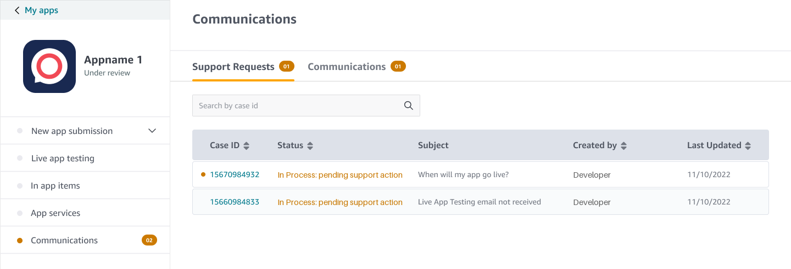
Outcome. About 47% fewer tickets than the baseline. Duplicates dropped, because developers could now see their own cases and had no reason to raise them again.
While designing the case pages I also set out where this should go next. A developer should be able to ask a question from anywhere in the console. Only if the chat cannot resolve it should it become a case, opened in the chat and linked straight to the case page. Phase 1 built the place that handoff lands.

What Phase 1 showed. Tickets fell by about 47% and duplicates dropped, because developers could follow their own cases. The North Star was the next step: stop routine questions from becoming tickets at all.
Once Phase 1 launched, the North Star was picked up and implemented as Phase 2. The assistant answers routine questions, so the support team receives only the tickets that need a person.
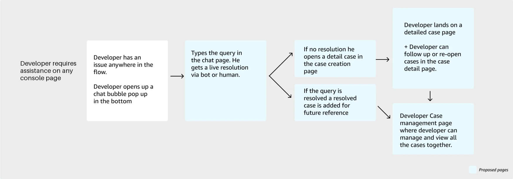
I worked with the MarTech team to decide what the assistant should show and how the content behind it should be structured, so that answers came from documentation we already had. I defined three behaviours.
| Searching the documentation | A developer's question is matched to documents, and the content is structured so the right pages come up first. |
|---|---|
| No document found | The developer does not hit a dead end. They can create a ticket inside the chat without leaving it. |
| A critical issue | When something is urgent, such as a review taking far too long, the chat raises an expedited ticket and sends it to customer support. The developer sees at once that it has been created. If it relates to an app, it is mapped to that app, and the ticket ID is shared in the chat. |
The assistant opens as a panel in the corner of the console and can expand into a full view with a chat history. Its answers carry numbered references to the documentation they came from, so a developer can check the source.
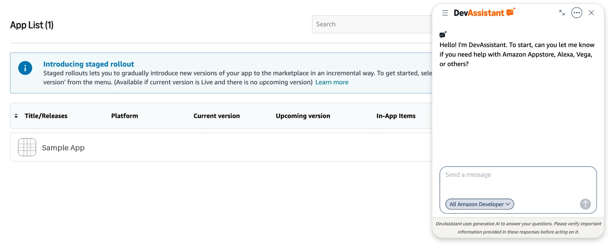
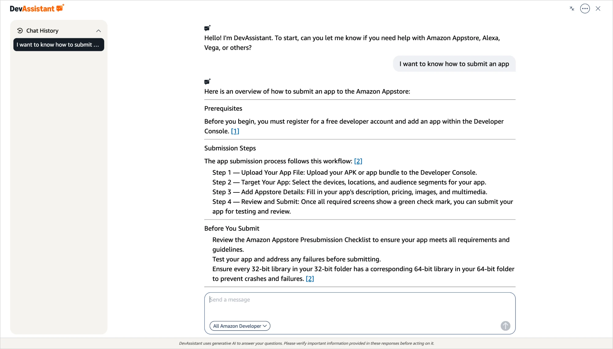
Outcome. About 87% fewer tickets than the baseline.
The measure was the number of tickets reaching customer support, and how many of those were duplicates. I set both against the baseline from the support team, and I mapped the Phase 1 and Phase 2 reductions to that same baseline.
For the support team
After Phase 2 the team received far fewer tickets each day, and the ones that arrived were high-critical issues. Most routine questions were answered by the assistant.
For developers
| Duplicates | Developers could see their own cases, so they stopped re-raising them. This showed in the ticket count after Phase 1. |
|---|---|
| Turnaround | Turnaround time roughly halved. |
Fewer tickets only counts as a good result if developers were helped, and I do not have satisfaction results to show that here.
| Sequence by dependency | Fixing discoverability first meant the case pages had somewhere to be reached from. Building the case system before the assistant meant the assistant had somewhere to hand off to. |
|---|---|
| Change the model, not just the screen | The change that mattered most was from "submit and wait" to "open a thread". Most of the drop in tickets came from removing the reasons to raise a second one. |
| Structure carries the work inside someone else's system | Working inside a design system I did not own, my leverage was in what is shown, in what order, and whose move each state says it is. |
| Next measure | Satisfaction after a question is answered by the assistant, drop-off on the longer form, and how often resolved cases are re-opened. |
|---|---|
| Next step | One home for everything the marketplace tells developers. This is a direction, not something I shipped. |